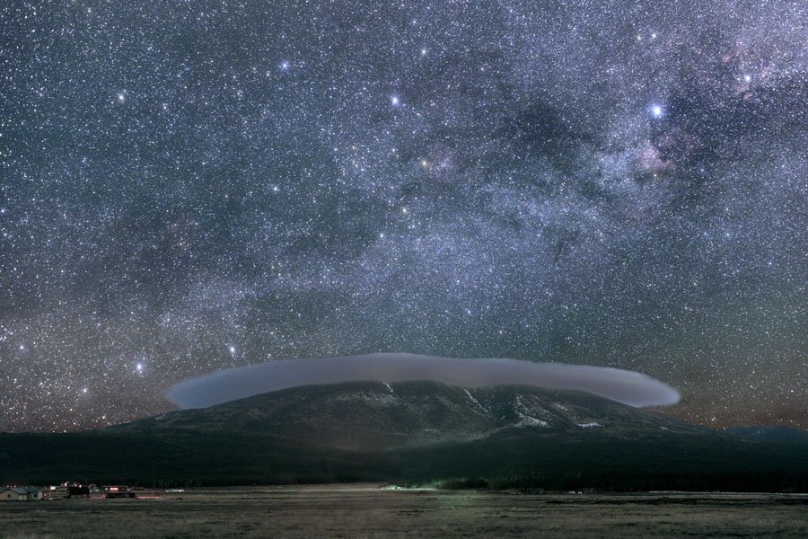
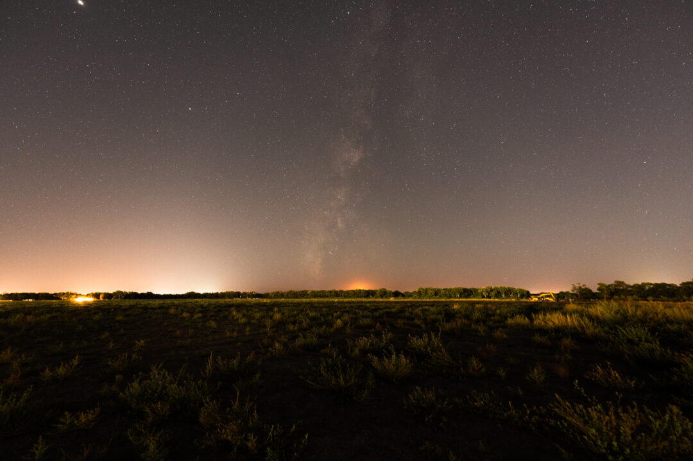

Flagstaff, Arizona became the IDA’s first Dark Sky City in 2001. A city ordinance seeks to
"assure that dark skies remain a resource to be enjoyed
by the Flagstaff community and its visitors, and to provide safe and efficient
outdoor lighting regulations that protect Flagstaff’s dark skies from careless
and wasteful lighting practices. Dark starry nights, like natural landscapes,
forests, clean water, wildlife, and clear unpolluted air, are valued in many
ways by the residents of this community,"
Image from the International Dark-Sky Association

Dark Sky parks, sanctuaries and reserves tend to be in remote locales
far from most of the country's inhabitants.
In 2019, the IDA began recognizing Urban Night Sky Places—spots in urban areas that are
managed to maintain night skies in the midst of significant artificial light.
Image from the International-Dark Sky Association